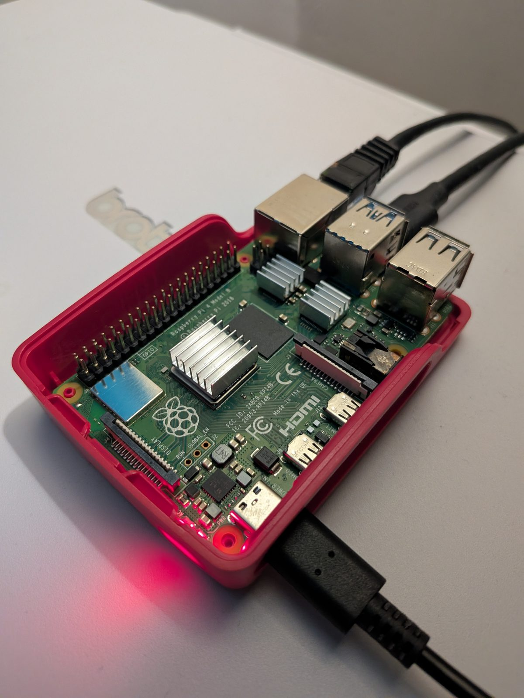

Dokumentacja Projektu: Domowy Serwer NAS
# 01. GENEZA I HARDWARE
Głównym celem projektu była ucieczka od ograniczeń darmowych chmur publicznych (i ich 15 GB limitu) na rzecz własnego, lokalnego magazynu danych o pojemności 1 TB. Serwer ma służyć jako szybki, bezprzewodowy węzeł wymiany plików w sieci domowej oraz docelowa przestrzeń na automatyczne backupy ze sprzętów z Linuksem i Androidem.
Architektura sprzętowa:
- Serce zestawu: Raspberry Pi 4 Model B (2 GB RAM) z systemem operacyjnym postawionym na karcie microSD 32 GB.
- Magazyn danych: Dwa dyski HDD 3.5" o pojemności 1 TB każdy, zamontowane w zewnętrznej stacji dokującej podpiętej przez magistralę USB 3.0. Całość działa bezgłośnie podczas codziennej pracy.
# 02. PROTOKOŁY I ARCHITEKTURA RETENCJI DANYCH
Wykorzystanie stacji dokującej podłączanej przez USB uniemożliwiło spięcie dysków w tradycyjną macierz RAID 1. Odpowiedzią na to ograniczenie jest planowane wdrożenie dedykowanego narzędzia do automatycznej synchronizacji.
Docelowy przepływ danych zakłada dwupoziomowy automat: z jednej strony bieżący backup plików z laptopa i smartfona na pierwszy dysk, z drugiej — cykliczny mirroring zawartości w tle z Dysku 1 na Dysk 2. W przypadku awarii fizycznej nośnika głównego, drugi dysk zachowuje pełną kopię zapasową.
Za bezpośredni dostęp do zasobów w sieci LAN odpowiada protokół Samba (SMB), gwarantując niskie opóźnienia przy wymianie danych między środowiskami Linux i Android.
# 03. EWOLUCJA OS: HARDENING VS ERGONOMIA
Dobór środowiska operacyjnego to historia iteracyjnych testów na żywym organizmie:
- Ubuntu Server: Odrzucone na starcie. Problemy z prawidłowym zarządzaniem strefami zasilania (spindown) w stacji dokującej USB powodowały cykliczne wybudzanie talerzy HDD co 5 minut, generując niepotrzebny hałas i zużycie sprzętu.
- OpenMediaVault (OMV): Najbardziej dojrzały wybór w zestawieniu. Przeprowadzony rygorystyczny hardening systemu dał stabilny i bezpieczny serwer z prawidłową obsługą usypiania dysków.
- CasaOS: Poligon doświadczalny. Wygodny interfejs dla laika zderzył się z zauważalnymi lukami w domyślnej konfiguracji bezpieczeństwa. Obecnie trwa faza testowa — jeśli ręczne utwardzenie systemu nie przyniesie oczekiwanych rezultatów, projekt powróci pod kontrolę OMV.
# 04. ZDJĘCIE / ARCHITEKTURA

Raspberry Pi 4 Model B — serce serwera NAS